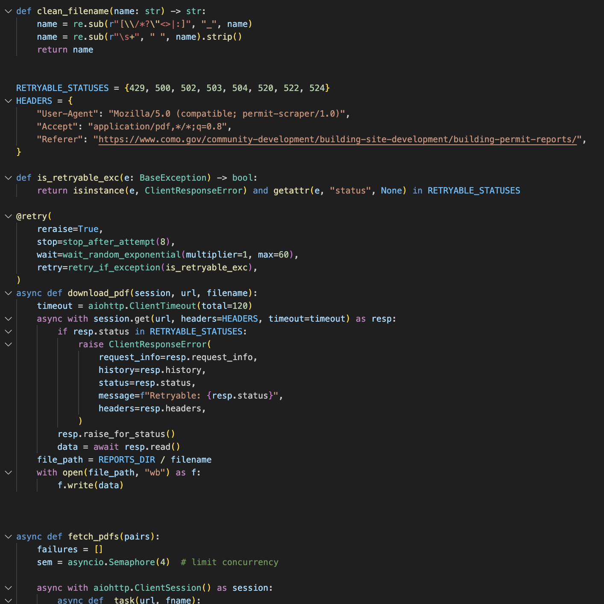

Python Projects
I am definitely still learning Python, but I've worked on about 12 Python projects so far and would consider it my "primary" coding language. Some of my favorite projects include a ML multiple linear regression classifier and a web scraper (in progress). You can see what I'm working on now on my GitHub page.
I am mainly interested in learning more about Python (and other coding languages!) for research and journalism.

Other languages
I have also worked with R, HTML/CSS, and C#, and briefly with mapping tools like QGIS and Leaflet.
One recent project of mine was a map I created to visualize Missouri's 2025 Congressional redistricting. I joined a dataset of block-level district assignments with Census Shapefiles to create a starter map, then used QGIS to dissolve block level boundaries and put the map into Leaflet.
Source: U.S. Census Bureau. Basemap © OpenStreetMap contributors.